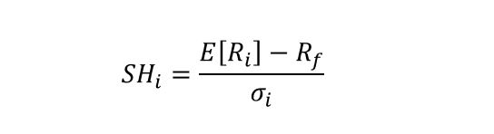

Indicadores de desempeño¶
Se utilizará una base de datos con los precios de cuatro acciones y los puntos del índice COLCAP con frecuencia diaria.
Importar datos¶
datos = read.csv("Cuatro acciones 2020 y COLCAP.csv", sep = ";", dec = ",", header = T)
head(datos)
tail(datos)
| Fecha | ECO | PFAVAL | ISA | NUTRESA | COLCAP | |
|---|---|---|---|---|---|---|
| <fct> | <int> | <int> | <int> | <int> | <dbl> | |
| 1 | 26/03/2018 | 2775 | 1165 | 13080 | 25720 | 1469.04 |
| 2 | 27/03/2018 | 2645 | 1155 | 13080 | 25700 | 1450.00 |
| 3 | 28/03/2018 | 2615 | 1165 | 13320 | 25980 | 1455.52 |
| 4 | 2/04/2018 | 2690 | 1165 | 13420 | 25920 | 1470.88 |
| 5 | 3/04/2018 | 2730 | 1175 | 13660 | 25920 | 1492.84 |
| 6 | 4/04/2018 | 2740 | 1190 | 13560 | 25840 | 1497.59 |
| Fecha | ECO | PFAVAL | ISA | NUTRESA | COLCAP | |
|---|---|---|---|---|---|---|
| <fct> | <int> | <int> | <int> | <int> | <dbl> | |
| 495 | 3/04/2020 | 2270 | 906 | 15500 | 19700 | 1127.55 |
| 496 | 6/04/2020 | 2260 | 955 | 16140 | 19720 | 1160.12 |
| 497 | 7/04/2020 | 2230 | 932 | 16680 | 20020 | 1163.43 |
| 498 | 8/04/2020 | 2360 | 936 | 17200 | 20700 | 1187.13 |
| 499 | 13/04/2020 | 2250 | 951 | 17860 | 21300 | 1193.98 |
| 500 | 14/04/2020 | 2220 | 955 | 18000 | 22500 | 1211.06 |
Matriz de precios¶
Se tendrá un objeto para los precios de las acciones precios y otro
para el mercado COLCAP.
Los precios de las acciones están entre las columnas 2 y 5 de datos
y el COLCAP está en la columna 6.
precios = datos[, 2:5]
precios = ts(precios)
COLCAP = datos[,6]
COLCAP = ts(COLCAP)
Matriz de rendimientos.¶
Matriz de rendimientos para las acciones rendimientos y matriz de
rendimientos para el mercado rendimientos_mercado.
rendimientos = diff(log(precios))
rendimientos_mercado = diff(log(COLCAP))
Rendimientos esperado de cada acción y del mercado¶
Rendimientos esperados de las acciones rendimientos_esperados y
rendimiento esperado del mercado rendimiento_esperado_mercado.
rendimientos_esperados = apply(rendimientos, 2, mean)
print(rendimientos_esperados)
rendimiento_esperado_mercado = mean(rendimientos_mercado)
rendimiento_esperado_mercado
ECO PFAVAL ISA NUTRESA
-0.0004471815 -0.0003983267 0.0006398545 -0.0002680433
Volatilidad de cada acción y del mercado¶
volatilidades para las acciones y volatilidad_mercado para el
COLCAP.
volatilidades = apply(rendimientos, 2, sd)
print(volatilidades)
volatilidad_mercado = sd(rendimientos_mercado)
volatilidad_mercado
ECO PFAVAL ISA NUTRESA
0.03193244 0.02855772 0.02372920 0.01401047
Rendimientos del portafolio de inversión¶
rendimientos_portafolio = vector()
for(i in 1:nrow(rendimientos)){
rendimientos_portafolio[i] = sum(rendimientos[i,]*proporciones)
}
Rendimiento esperado del portafolio de inversión¶
rendimiento_esperado_portafolio = mean(rendimientos_portafolio)
rendimiento_esperado_portafolio
Volatilidad del portafolio de inversión portafolio¶
volatilidad_portafolio = sd(rendimientos_portafolio)
volatilidad_portafolio
Tasa libre de riesgo¶
Tasa libre de riesgo de TES colombiano a 10 año con fecha del 14 de abril de 2020.
Esta tasa está expresada en E.A y como se está trabajando con rendimientos continuos, se debe utilizar la \(R_f\) en tiempo continuo.
Rf = 0.06916 #E.A.
Rf = log(1 + Rf) #Continua anual
Rf_diario = Rf/250 #Continua diario
Rf_diario
Beta de cada acción¶
Valores calculados con precios mensuales en otro código.
beta = c(1.23765583817092, 1.04762467584509, 0.696424844336778, 0.805687711895736)
beta
- 1.23765583817092
- 1.04762467584509
- 0.696424844336778
- 0.805687711895736
beta_portafolio = sum(proporciones*beta)
beta_portafolio
Indicadores de desempeño¶
* Ratio de Sharpe:

1¶
sharpe = (rendimiento_esperado_portafolio - Rf_diario)/volatilidad_portafolio
sharpe
Por cada unidad de volatilidad, el portafolio tuvo un exceso de rentabilidad de 0,0061 unidades por día.
* Ratio de Treynor:
2¶
treynor = (rendimiento_esperado_portafolio - Rf_diario)/beta_portafolio
treynor
Por cada unidad de riesgo sistemático, el portafolio tuvo un exceso de rentabilidad de 0,02% diario.
Por cada unidad de riesgo sistemático, el portafolio entregó una prima de 0,02% diario.
Por cada unidad de riesgo sistemático, el portafolio generó 0,02% diario de rendimiento por encima de la tasa libre de riesgo.
* Alfa de Jensen:
3¶
jensen = (rendimiento_esperado_portafolio - Rf_diario) - (rendimiento_esperado_mercado - Rf_diario)*beta_portafolio
jensen
El portafolio entregó un 0,06% diario de prima de rentabilidad por encima de la prima por riesgo del portafolio.
El rendimiento del portafolio está por encima del rendimiento estimado por CAPM en un 0,06% diario.
Indicadores de desempeño anualizados¶
* Ratio de Sharpe:
1¶
sharpe = (rendimiento_esperado_portafolio*250 - Rf)/(volatilidad_portafolio*sqrt(250))
sharpe
Por cada unidad de volatilidad, el portafolio tuvo un exceso de rentabilidad de 0,0965 unidades por año.
* Ratio de Treynor:
2¶
treynor = (rendimiento_esperado_portafolio*250 - Rf)/beta_portafolio
treynor
Por cada unidad de riesgo sistemático, el portafolio tuvo un exceso de rentabilidad de 3,88% por año.
Por cada unidad de riesgo sistemático, el portafolio entregó una prima de 3,88% anual.
Por cada unidad de riesgo sistemático, el portafolio generó 3,88% anual de rendimiento por encima de la tasa libre de riesgo.
* Alfa de Jensen:
3¶
jensen = (rendimiento_esperado_portafolio*250 - Rf) - (rendimiento_esperado_mercado*250 - Rf)*beta_portafolio
jensen
El portafolio entregó un 15,77% anual de prima de rentabilidad por encima de la prima por riesgo del portafolio.
El rendimiento del portafolio está por encima del rendimiento estimado por CAPM en un 15,77% anual.